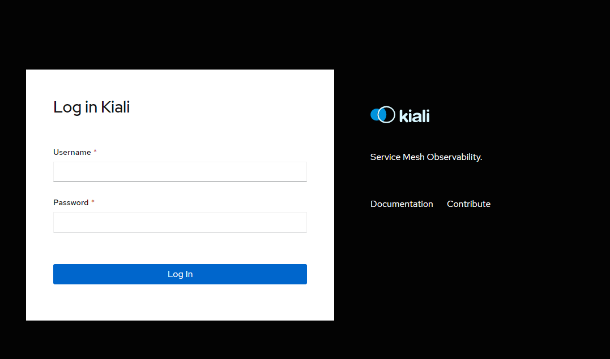
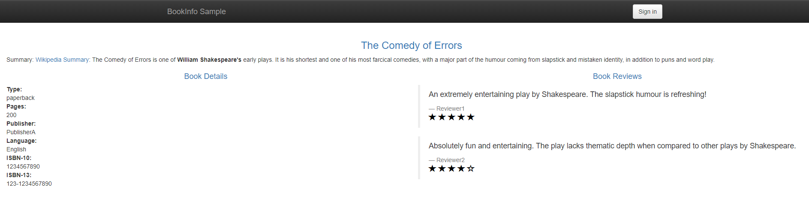

本篇我们讲一下如何部署istio到k8s集群，并且部署一个bookinfo样例来进行istio的访问测试。
部署istio 这里我们部署的istio版本是1.5.1，对应的k8s集群版本是1.18.4。
1 2 3 4 5 6 7 8 9 10 curl -L https://istio.io/downloadIstio |ISTIO_VERSION=1 .5 .1 sh -export PATH="$PATH :/root/istio-1.5.1/bin" [root@VM -0 -13 -centos istio-1 .5 .1 ] 2020 -11 -29T08:18 :41 .074811Z warn will use `--remote=false ` to retrieve version info due to `no Istio pods in namespace "istio-system" `1 .5 .1
istioctl安装配置的选择
安装方式 示例 默认安装 istioctl manifest apply 选择profile istioctl manifest apply —set profile=demo 自定义安装选项 istioctl manifest apply —set addonComponents.grafana.enabled=true 自定义安装清单 istioctl manifest apply —set installPackagePath=<发布路径>/install/kubernetes/operator/charts
这里我们采用demo的配置进行安装部署，demo包含了istio的所有组件
1 2 3 4 5 6 7 8 9 10 11 12 13 14 15 16 17 18 19 20 21 22 23 24 25 26 istioctl manifest apply --set profile=demo [root@ VM-0 -13 -centos ~]# kubectl get pod -n istio-system NAME READY STATUS RESTARTS AGE grafana-84 b9bb5d7f-s2btw 1 /1 Running 0 6 m52s istio-egressgateway-666956 b747-zp4vh 1 /1 Running 0 6 m58s istio-ingressgateway-84 c4db59b7-654f n 1 /1 Running 0 6 m58s istio-tracing-5 c87579565-5 z4rn 1 /1 Running 0 6 m52s istiod-5 bffb974b6-dh8jc 1 /1 Running 0 7 m16s kiali-5 ddbc4cf59-xc7gd 1 /1 Running 0 6 m52s prometheus-668f 978454-mr9pl 2 /2 Running 0 6 m52s [root@ VM-0 -13 -centos ~]# kubectl get svc -n istio-system NAME TYPE CLUSTER-IP EXTERNAL-IP PORT(S) AGE grafana ClusterIP 172.16 .118 .255 <none> 3000 /TCP 7 m4s istio-egressgateway ClusterIP 172.16 .106 .170 <none> 80 /TCP,443 /TCP,15443 /TCP 7 m10s istio-ingressgateway LoadBalancer 172.16 .99 .203 42.194 .246 .130 15020 :32289 /TCP,80 :30066 /TCP,443 :32311 /TCP,15029 :31532 /TCP,15030 :31660 /TCP,15031 :30183 /TCP,15032 :30388 /TCP,31400 :30952 /TCP,15443 :31259 /TCP 7 m10s istio-pilot ClusterIP 172.16 .65 .31 <none> 15010 /TCP,15011 /TCP,15012 /TCP,8080 /TCP,15014 /TCP,443 /TCP 7 m28s istiod ClusterIP 172.16 .5 .124 <none> 15012 /TCP,443 /TCP 7 m28s jaeger-agent ClusterIP None <none> 5775 /UDP,6831 /UDP,6832 /UDP 7 m4s jaeger-collector ClusterIP 172.16 .34 .1 <none> 14267 /TCP,14268 /TCP,14250 /TCP 7 m4s jaeger-collector-headless ClusterIP None <none> 14250 /TCP 7 m4s jaeger-query ClusterIP 172.16 .54 .199 <none> 16686 /TCP 7 m4s kiali ClusterIP 172.16 .121 .70 <none> 20001 /TCP 7 m4s prometheus ClusterIP 172.16 .38 .123 <none> 9090 /TCP 7 m4s tracing ClusterIP 172.16 .110 .87 <none> 80 /TCP 7 m3s zipkin ClusterIP 172.16 .120 .180 <none> 9411 /TCP 7 m3s
istio的安装部署的验证方式
1 2 3 4 $ istioctl manifest generate > $HOME /generated-manifest .yaml$ kubectl apply -f $HOME /generated-manifest .yaml$ istioctl verify-install -f $HOME /generated-manifest .yam
如果某个命名空间不想自动注入，只需为该namespace加上istio-injection=disabled标签即可。
1 kubectl label ns test istio-injection=disabled
istio删除方式
1 istioctl manifest generate --set profile=demo | kubectl delete -f -
istio的demo中包含一个dashboard，组件叫kiali，我们可以通过kiali来查看组件的运行情况和负载的注入情况。
我们可以通过下面命令开启kiali的访问
1 2 3 [root@ VM-0 -13 -centos treafik]# istioctl dashboard kiali http: Failed to open browser; open http:
也可以通过treafik来暴露一个域名进行访问
1 2 3 4 5 6 7 8 9 10 11 12 13 14 15 --- apiVersion: traefik.containo.us/v1alpha1 kind: IngressRoute metadata: name: kiali-webui namespace: istio-system spec: entryPoints: - web routes: - match: Host(`istio.k8s.niewx.cn`) kind: Rule services: - name: kiali port: 20001

通过域名进行访问，登录的账号密码默认为admin/admin
部署bookinfo测试样例 1 2 3 4 5 6 kubectl label namespace default istio-injection =enabled kubectl apply -f samples/bookinfo/platform/kube/bookinfo.yaml
部署bookinfo的访问入口ingressgateway bookinfo的访问入口，是部署一个ingressgateway，具体yaml如下
1 2 3 4 5 6 7 8 9 10 11 12 13 14 15 16 17 18 19 20 21 22 23 24 25 26 27 28 29 30 31 32 33 34 35 36 37 38 39 40 41 42 43 44 kubectl apply -f samples/bookinfo/networking/bookinfo-gateway.yaml apiVersion: networking.istio.io/v1alpha3 kind: Gateway metadata: name: bookinfo-gateway spec: selector: istio: ingressgateway servers: - port: number: 80 name: http protocol: HTTP hosts: - "*" --- apiVersion: networking.istio.io/v1alpha3 kind: VirtualService metadata: name: bookinfo spec: hosts: - "*" gateways: - bookinfo-gateway http: - match: - uri: exact: /productpage - uri: prefix: /static - uri: exact: /login - uri: exact: /logout - uri: prefix: /api/v1/products route: - destination: host: productpage port: number: 9080
ingressgateway定义了允许访问bookinfo的访问host，还有一个VirtualService来将流量转发到后端的哪个服务。

到这里，我们就已经在集群中部署了istion，并且将一个bookinfo的应用通过ingressgateway的方式暴露出去提供访问。
欢迎访问 Vashon 的博客，博客和文章在完善中，请大家耐心等待。 若有问题或者有好的建议欢迎留言，笔者看到之后会及时回复。
为正常使用来必力评论功能请激活JavaScript